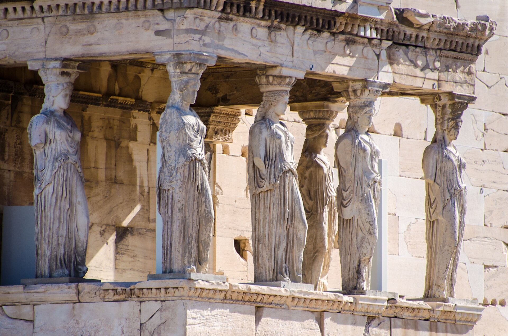
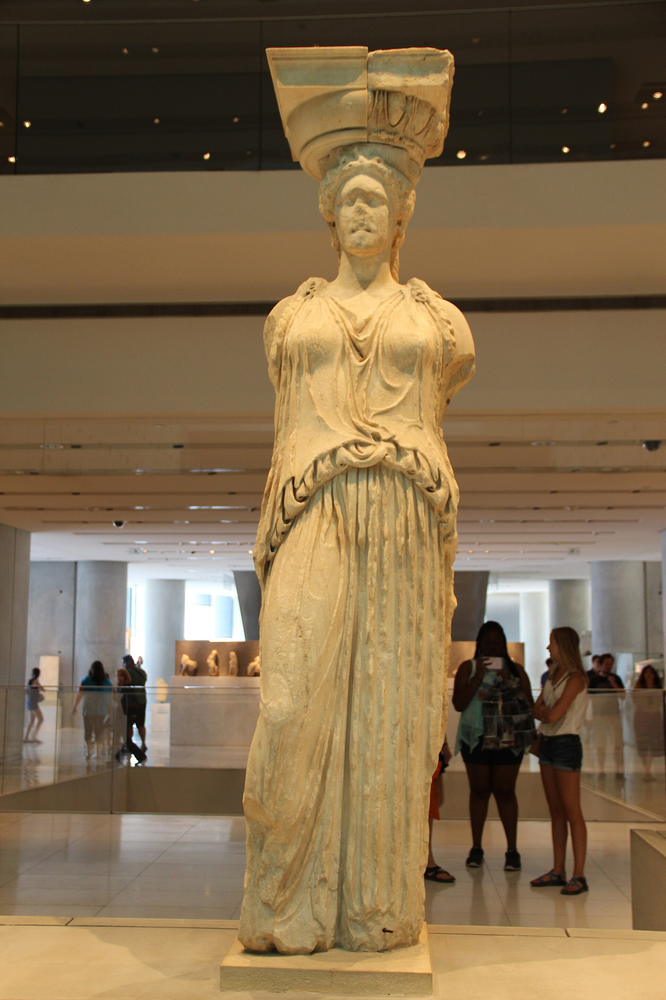

Caryatid (KAIR-ee-at-id)
A carved female figure used as an architectural support in place of a column.
Architects unknown · Athens, 421–406 B.C.E. · Pentelic marble


One original caryatid is shown in the Acropolis Museum. Her straight body carries the weight above, while the folds of her long dress fall in vertical lines like the flutes of a column.
The Erechtheion is a temple on the Acropolis in Athens. Its famous Porch of the Caryatids uses six marble women as supports. A figure used in place of a column is called a caryatid. These women are not simply statues placed in front of a building: each one helps hold up the porch roof.
Most Greek temples use columns with a capital at the top. At the Erechtheion, the architects turned that idea into something more surprising. Each caryatid has a strong, upright body and a basket-like capital above her head. The long folds of her dress form steady vertical lines, making her body feel both human and column-like.
The porch belongs to the Ionic style, known for slender proportions and careful decoration. The caryatids add grace without losing strength. Their poses are not exactly alike, so the porch has gentle movement, yet together the six figures create a balanced, dependable support.
A carved female figure used as an architectural support in place of a column.
A Greek architectural style with slender proportions and capitals that usually have spiral scrolls. The Erechtheion uses this style in its details.
The top part of a column or support. It spreads the weight of the structure above onto the support below.
The caryatids give you a useful question for later architecture: when a building uses a human-shaped support, is it only decoration, or does it also carry weight? Here, the answer is both. The women make the porch more graceful, but their bodies also take the place of columns. Their vertical dresses, steady poses, and capitals above their heads show how sculpture and architecture can work together.